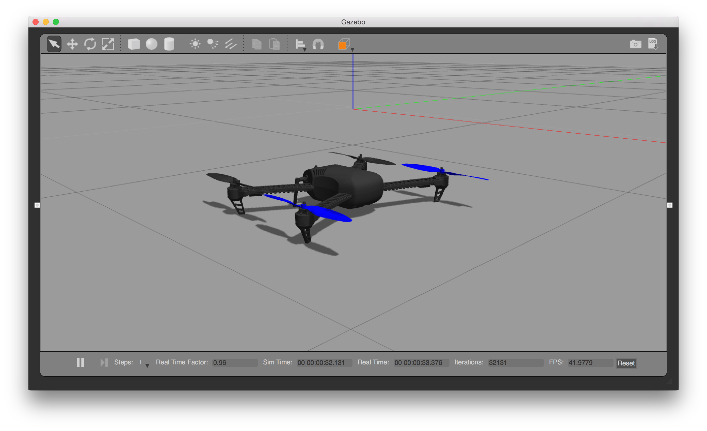

Gazebo Simulation
官网英文原文地址： http://dev.px4.io/simulation-gazebo.html
Gazebo是一个自主机器人3D仿真环境。它可以与ROS配套用于完整的机器人仿真，也可以单独使用。本文简要介绍单独的使用方法。
安装
需要安装Gazebo和我们的仿真插件。
推荐使用Gazebo 7（最低使用Gazebo 6）。如果你的Linux操作系统安装的ROS版本早于Jade，请先卸载其绑定的旧版本Gazebo (sudo apt-get remove ros-indigo-gazebo)，因为该版本太老了。
Mac OS
Mac OS需要安装Gazebo 7，相应的需要安装xquartz，并且在没有OpenCV时无法运行。
brew cask install xquartz
brew install opencv
brew install gazebo7
Linux
PX4 SITL使用Gazebo仿真软件，但不依赖ROS。但是也可以像普通飞行代码一样与ROS连接进行仿真。
ROS 用户
如果你计划与ROS一起用PX4，确保按照Gazebo 7版本指南进行配置。
正常安装
按照Linux安装指导 安装Gazebo 7。
确保gazebo7和libgazebo7-dev都装上了。
进行仿真
在PX4固件源文件的目录下运行一种机架类型（支持四旋翼、固定翼和垂直起降，含光流）的PX4 SITL。
注意：您可以使用下面的说明来保持Gazebo运行，并且只用重新启动PX4。
四旋翼
cd ~/src/Firmware
make posix_sitl_default gazebo
四旋翼带光流模块
cd ~/src/Firmware
make posix gazebo_iris_opt_flow
3DR Solo
cd ~/src/Firmware
make posix gazebo_solo

标准直升机
make posix gazebo_plane

标准垂直起降飞机
make posix_sitl_default gazebo_standard_vtol

立式垂直起降
make posix_sitl_default gazebo_tailsitter

Ackerman车
make posix gazebo_rover

更改世界背景
当前的默认世界是位于世界目录中的iris.world。iris.world中的默认环境使用高度图作为地面。使用距离传感器时，遇到这样的地面往往很难取得理想的效果。如果在该高度图中出现和预期不一致的结果，建议将iris.model中的模型从irregular_ground更改为asphalt_plane。
起飞
如果你在运行的时候遇到错误或缺少依赖，确保你是按照安装文件和代码安装的。
接着会启动PX4 shell:
[init] shell id: 140735313310464
[init] task name: px4
______ __ __ ___
| ___ \ \ \ / / / |
| |_/ / \ V / / /| |
| __/ / \ / /_| |
| | / /^\ \ \___ |
\_| \/ \/ |_/
px4 starting.
pxh>
右击四旋翼模型可以从弹出的菜单中启用跟随模式，这将会始终保持飞行器在视野中。

一旦完成初始化，系统将会打印出起始位置(telem> home: 55.7533950, 37.6254270, -0.00)。你可以通过输入下面的命令让飞行器起飞：
pxh> commander takeoff
QGroundControl(QGC)支持手柄或拇指手柄。为了使用手柄控制飞行器，要将系统设为手动飞行模式（如 POSCTL，位置控制），并从QGC的选项菜单中启用拇指手柄。
设置自定义起飞位置
SITL Gazebo中的默认起飞位置可以使用环境变量来覆盖。
要设置的变量有： PX4_HOME_LAT, PX4_HOME_LON, and PX4_HOME_ALT.
举个例子
export PX4_HOME_LAT=28.452386
export PX4_HOME_LON=-13.867138
export PX4_HOME_ALT=28.5
make posix gazebo
单独启动Gazebo和PX4
对于扩展开发会话(development sessions)，单独启动Gazebo和PX4可能会更为方便，甚至还可以从IDE中启动。
除了现有的使用px4参数运行sitl_run.sh来加载正确的模型的cmake 目标(target)之外，它还创建了一个名为px4_
如何使用
- 通过终端运行gazebo（或任何其他模拟器）服务器(server)和客户端(client)查看器：
make posix_sitl_default gazebo_none_ide - 在您的IDE中选择您要调试的px4_
目标（例如 px4_iris） - 直接从IDE启动调试会话(session)
这种方法显着减少了调试周期时间，因为模拟器（例如Gazebo）总是在后台运行，并且您只用重新运行非常light的px4进程。
扩展和自定义
为了扩展和定制仿真接口，编辑Tools/sitl_gazebo文件夹中的文件。这些代码可以从Github上的sitl_gazebo repository访问。
构建系统强制检查所有依赖的子模块，包括仿真软件。虽然这些文件夹中文件的改变不会被覆盖，但当这些改变被提交的时候子模块需要在固件库中以新的hash注册。为此，输入
git add Tools/sitl_gazebo进行提交。这样仿真软件的GIT hash就会被更新。
与ROS连接
仿真可以像真实的飞控一样与ROS连接